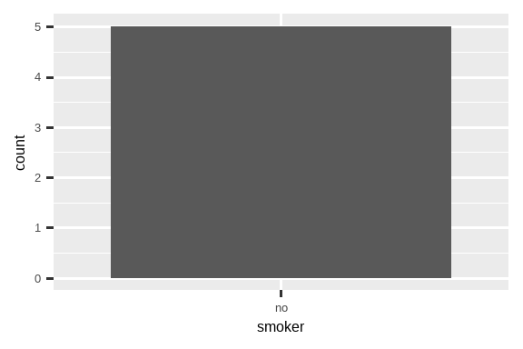
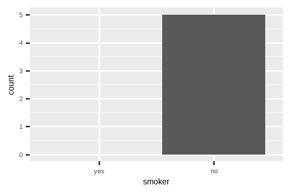

18 缺失值
18.1 引言
你在本书的前面部分已经学习了关于缺失值的基础知识。你第一次见到它们是在 Chapter 1，当时它们在绘图时导致了一个警告；在 Section 3.5.2，它们干扰了汇总统计的计算；在 Section 12.2.2，你了解了它们的传染性以及如何检查它们的存在。现在，我们将更深入地探讨它们，以便你学习更多细节。
我们将首先讨论一些处理记录为 NA 的缺失值的通用工具。然后，我们将探讨隐式缺失值的概念，即那些仅仅在你的数据中不存在的值，并展示一些你可以用来使它们显式化的工具。最后，我们将以一个相关的话题——空组来结束，这是由数据中未出现的因子水平引起的。
18.1.1 前提条件
处理缺失数据的函数主要来自 dplyr 和 tidyr，它们是 tidyverse 的核心成员。
18.2 显式缺失值
首先，让我们探讨一些用于创建或消除显式缺失值（即你看到 NA 的单元格）的便捷工具。
18.2.1 末次观测值结转
缺失值的一个常见用途是作为数据录入的便利手段。当数据是手动输入时，缺失值有时表示前一行中的值被重复（或结转）了：
treatment <- tribble(
~person, ~treatment, ~response,
"Derrick Whitmore", 1, 7,
NA, 2, 10,
NA, 3, NA,
"Katherine Burke", 1, 4
)你可以使用 tidyr::fill() 来填充这些缺失值。它的工作方式类似于 select()，接受一组列：
treatment |>
fill(everything())
#> # A tibble: 4 × 3
#> person treatment response
#> <chr> <dbl> <dbl>
#> 1 Derrick Whitmore 1 7
#> 2 Derrick Whitmore 2 10
#> 3 Derrick Whitmore 3 10
#> 4 Katherine Burke 1 4这种处理方法有时被称为“末次观测值结转”(last observation carried forward)，简称 locf。你可以使用 .direction 参数来填充以更奇特方式产生的缺失值。
18.2.2 固定值
有时缺失值代表某个固定的已知值，最常见的是 0。你可以使用 dplyr::coalesce() 来替换它们：
有时你会遇到相反的问题，即某个具体值实际上代表一个缺失值。这通常出现在由没有适当方式表示缺失值的旧软件生成的数据中，因此它必须使用一些特殊值，如 99 或 -999。
如果可能，在读入数据时处理这个问题，例如，使用 readr::read_csv() 的 na 参数，例如 read_csv(path, na = "99")。如果你后来才发现这个问题，或者你的数据源没有提供在读取时处理它的方法，你可以使用 dplyr::na_if()：
18.2.3 NaN
在我们继续之前，有一种特殊类型的缺失值你偶尔会遇到：NaN（读作 “nan”），即非数值 (not a number)。了解它并不那么重要，因为它通常的行为就像 NA 一样：
在极少数情况下，如果你需要区分 NA 和 NaN，你可以使用 is.nan(x)。
当你执行一个结果不确定的数学运算时，通常会遇到 NaN：
0 / 0
#> [1] NaN
0 * Inf
#> [1] NaN
Inf - Inf
#> [1] NaN
sqrt(-1)
#> Warning in sqrt(-1): NaNs produced
#> [1] NaN18.3 隐式缺失值
到目前为止，我们讨论的缺失值都是显式缺失的，也就是说，你可以在数据中看到一个 NA。但缺失值也可能是隐式缺失的，如果一整行数据根本就不存在于数据中。让我们用一个记录某支股票每个季度价格的简单数据集来说明这两者的区别：
这个数据集中有两个缺失的观测值：
2020 年第四季度的
price是显式缺失的，因为它的值是NA。2021 年第一季度的
price是隐式缺失的，因为它根本没有出现在数据集中。
思考这两者区别的一种方式是这个富有禅意的公案：
显式缺失值是一种存在着的“缺失”。
隐式缺失值是一种不存在着的“存在”。
有时你想让隐式缺失变得显式，以便有一个可以操作的实体。在其他情况下，显式缺失是由数据结构强加给你的，而你想摆脱它们。以下各节讨论了一些在隐式和显式缺失之间转换的工具。
18.3.1 数据重塑 (Pivoting)
你已经见过一个可以使隐式缺失变显式以及反之亦然的工具：数据重塑 (pivoting)。将数据变宽可以使隐式缺失值变得显式，因为行和新列的每种组合都必须有某个值。例如，如果我们重塑 stocks 数据，把 quarter 放到列中，两个缺失值都变得显式了：
stocks |>
pivot_wider(
names_from = qtr,
values_from = price
)
#> # A tibble: 2 × 5
#> year `1` `2` `3` `4`
#> <dbl> <dbl> <dbl> <dbl> <dbl>
#> 1 2020 1.88 0.59 0.35 NA
#> 2 2021 NA 0.92 0.17 2.66默认情况下，将数据变长会保留显式缺失值，但如果它们是仅因数据不整洁而存在的结构性缺失值，你可以通过设置 values_drop_na = TRUE 来丢弃它们（使它们变为隐式）。更多细节请参见 Section 5.2 中的示例。
18.3.2 补全 (Complete)
tidyr::complete() 允许你通过提供一组定义了应该存在的行组合的变量来生成显式缺失值。例如，我们知道 year 和 qtr 的所有组合都应该存在于 stocks 数据中：
stocks |>
complete(year, qtr)
#> # A tibble: 8 × 3
#> year qtr price
#> <dbl> <dbl> <dbl>
#> 1 2020 1 1.88
#> 2 2020 2 0.59
#> 3 2020 3 0.35
#> 4 2020 4 NA
#> 5 2021 1 NA
#> 6 2021 2 0.92
#> # ℹ 2 more rows通常，你会用现有变量的名称来调用 complete()，以填充缺失的组合。然而，有时单个变量本身就是不完整的，所以你可以提供自己的数据。例如，你可能知道 stocks 数据集应该从 2019 年到 2021 年，所以你可以为 year 明确提供这些值：
stocks |>
complete(year = 2019:2021, qtr)
#> # A tibble: 12 × 3
#> year qtr price
#> <dbl> <dbl> <dbl>
#> 1 2019 1 NA
#> 2 2019 2 NA
#> 3 2019 3 NA
#> 4 2019 4 NA
#> 5 2020 1 1.88
#> 6 2020 2 0.59
#> # ℹ 6 more rows如果一个变量的范围是正确的，但并非所有值都存在，你可以使用 full_seq(x, 1) 来生成从 min(x) 到 max(x) 之间以 1 为间隔的所有值。
在某些情况下，完整的观测集合不能通过变量的简单组合生成。在这种情况下，你可以手动完成 complete() 为你做的事情：创建一个包含所有应该存在的行的数据框（使用你需要的任何技术组合），然后用 dplyr::full_join() 将它与你的原始数据集结合起来。
18.3.3 连接 (Joins)
这引出了揭示隐式缺失观测值的另一种重要方式：连接 (joins)。你将在 Chapter 19 中学习更多关于连接的知识，但我们想在这里快速提及它们，因为你通常只有在将一个数据集与另一个数据集进行比较时，才能知道值是缺失的。
dplyr::anti_join(x, y) 在这里是一个特别有用的工具，因为它只选择 x 中在 y 中没有匹配的行。例如，我们可以使用两个 anti_join() 来揭示我们缺少 flights 中提到的四个机场和 722 架飞机的信息：
library(nycflights13)
flights |>
distinct(faa = dest) |>
anti_join(airports)
#> Joining with `by = join_by(faa)`
#> # A tibble: 4 × 1
#> faa
#> <chr>
#> 1 BQN
#> 2 SJU
#> 3 STT
#> 4 PSE
flights |>
distinct(tailnum) |>
anti_join(planes)
#> Joining with `by = join_by(tailnum)`
#> # A tibble: 722 × 1
#> tailnum
#> <chr>
#> 1 N3ALAA
#> 2 N3DUAA
#> 3 N542MQ
#> 4 N730MQ
#> 5 N9EAMQ
#> 6 N532UA
#> # ℹ 716 more rows18.3.4 练习
- 你能找到航空公司和那些似乎从
planes数据集中缺失的行之间的任何关系吗？
18.4 因子和空组
最后一种缺失类型是空组 (empty group)，即不包含任何观测值的组，这在处理因子时可能出现。例如，假设我们有一个包含一些人健康信息的数据集：
我们想用 dplyr::count() 来计算吸烟者的数量：
health |> count(smoker)
#> # A tibble: 1 × 2
#> smoker n
#> <fct> <int>
#> 1 no 5这个数据集只包含非吸烟者，但我们知道吸烟者是存在的；非吸烟者组是空的。我们可以通过使用 .drop = FALSE 来要求 count() 保留所有的组，即使是那些在数据中未见到的组：
health |> count(smoker, .drop = FALSE)
#> # A tibble: 2 × 2
#> smoker n
#> <fct> <int>
#> 1 yes 0
#> 2 no 5同样的原则也适用于 ggplot2 的离散坐标轴，它也会丢弃没有任何值的水平。你可以通过向相应的离散坐标轴提供 drop = FALSE 来强制它们显示：
ggplot(health, aes(x = smoker)) +
geom_bar() +
scale_x_discrete()
ggplot(health, aes(x = smoker)) +
geom_bar() +
scale_x_discrete(drop = FALSE)

同样的问题在 dplyr::group_by() 中也更普遍地出现。你同样可以使用 .drop = FALSE 来保留所有因子水平：
health |>
group_by(smoker, .drop = FALSE) |>
summarize(
n = n(),
mean_age = mean(age),
min_age = min(age),
max_age = max(age),
sd_age = sd(age)
)
#> # A tibble: 2 × 6
#> smoker n mean_age min_age max_age sd_age
#> <fct> <int> <dbl> <dbl> <dbl> <dbl>
#> 1 yes 0 NaN Inf -Inf NA
#> 2 no 5 60 34 88 21.6我们在这里得到了一些有趣的结果，因为当对一个空组进行汇总时，汇总函数被应用于零长度的向量。空向量（长度为 0）和缺失值（每个长度为 1）之间有一个重要的区别。
所有汇总函数都适用于零长度向量，但它们可能返回乍一看令人惊讶的结果。这里我们看到 mean(age) 返回 NaN，因为 mean(age) = sum(age)/length(age)，在这里是 0/0。max() 和 min() 对空向量返回 -Inf 和 Inf，所以如果你将结果与一个非空的新数据向量结合并重新计算，你将得到新数据的最小值或最大值1。
有时一个更简单的方法是先执行汇总，然后用 complete() 使隐式缺失变得显式。
health |>
group_by(smoker) |>
summarize(
n = n(),
mean_age = mean(age),
min_age = min(age),
max_age = max(age),
sd_age = sd(age)
) |>
complete(smoker)
#> # A tibble: 2 × 6
#> smoker n mean_age min_age max_age sd_age
#> <fct> <int> <dbl> <dbl> <dbl> <dbl>
#> 1 yes NA NA NA NA NA
#> 2 no 5 60 34 88 21.6这种方法的主要缺点是，你得到的计数是 NA，即使你知道它应该是零。
18.5 总结
缺失值很奇怪！有时它们被记录为显式的 NA，但其他时候你只能通过它们的缺席来注意到它们。本章为你提供了一些处理显式缺失值的工具，揭示隐式缺失值的工具，并讨论了隐式如何变为显式以及反之亦然的一些方法。
在下一章，我们将 affrontare 本书这一部分的最后一章：连接 (joins)。这与到目前为止的章节有些不同，因为我们将讨论作用于整个数据框的工具，而不是你放在数据框内部的东西。
换句话说，
min(c(x, y))总是等于min(min(x), min(y))。↩︎